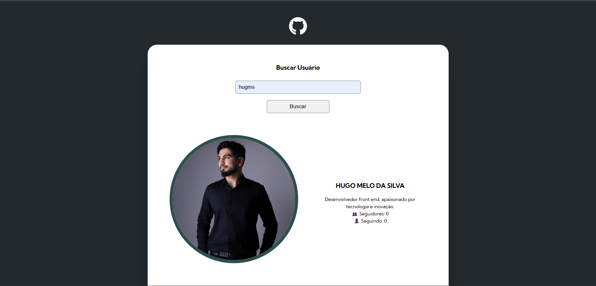
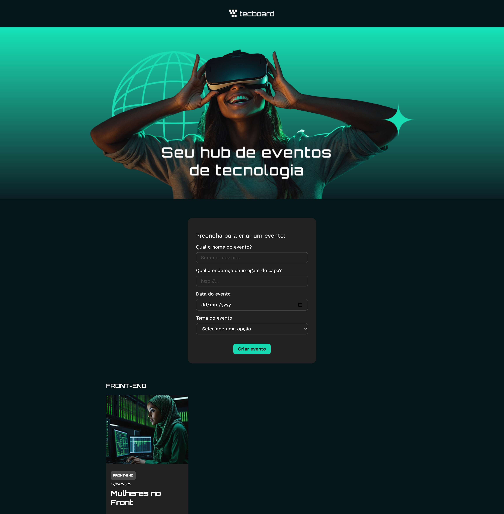
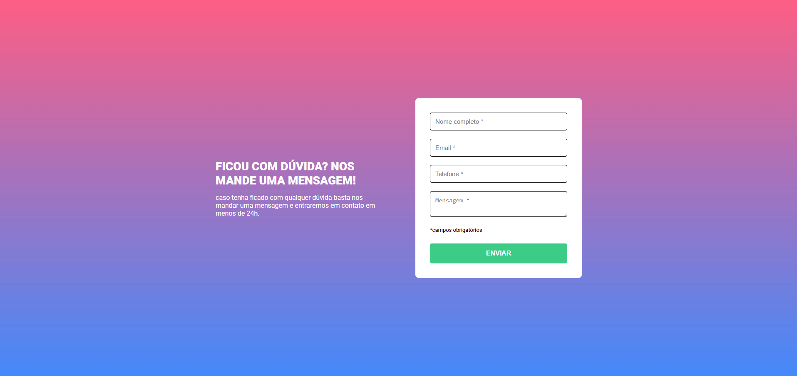

Meus Projetos

Projeto Buscar Perfil no GitHub
O GitHub Profile Searcher é uma aplicação web desenvolvida para facilitar a busca por usuários na plataforma GitHub. Através da integração com a API pública do GitHub, a ferramenta permite visualizar informações detalhadas de perfis, repositórios recentes e as tecnologias mais utilizadas em cada projeto.
Ver Repositório
Projeto Tecboard React
Seu hub de eventos de tecnologia! Este projeto foi construído com React e tem como objetivo facilitar a criação e visualização de eventos voltados para temas como Front-end, Back-end, Cloud e muito mais.
Ver Repositório
Projeto Validação de formulario
Desenvolvi uma aplicação web utilizando HTML5, CSS3 e JavaScript, com foco em responsividade, interatividade e boas práticas de desenvolvimento front-end. O projeto contempla manipulação do DOM, eventos, estilização avançada e organização de código, demonstrando conhecimentos intermediários em desenvolvimento web.
Ver Repositório